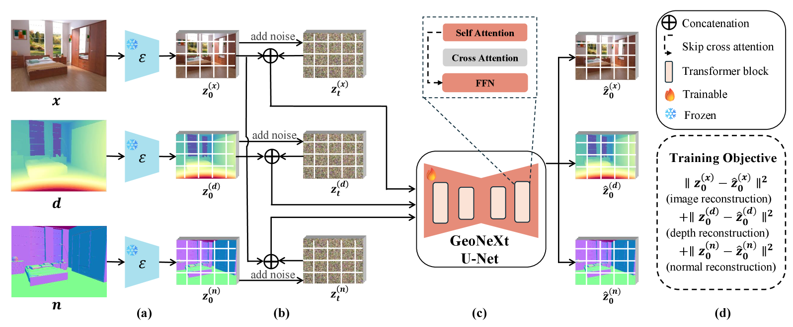

Building geometry…
ECCV 2026
Video Generative Models
as Geometry Learner
1University of Surrey · 2Independent Researcher · 3Imperial College London
TL;DR
- GeoNeXt repurposes an off-the-shelf video generative model as a geometry learner for monocular depth and surface-normal estimation.
- It reformulates geometry estimation as next-frame prediction, leveraging the video model’s temporal priors to enable cross-frame interaction between appearance and geometry.
- By co-generating the image, depth, and normals along a shared denoising trajectory, GeoNeXt achieves strong zero-shot generalization using only 59K training samples.
How it works
Geometry as next frames

Overview of the GeoNeXt fine-tuning protocol. (a) We start from the pretrained Stable Video Diffusion model and encode the RGB image x, depth d, and surface normal n into the latent space using the frozen Stable Diffusion VAE. (b) Noise is sampled and added to the latent z. The image latent is replicated across the geometry slots (depth and normal), and further conditioned by concatenating the geometry latents. (c) We fine-tune only the GeoNeXt U-Net. (d) The model is optimized with the standard diffusion objective over image, depth, and normal latents to ensure fine-grained alignment and consistency between image and geometry.
Unified prediction
One model. Joint depth and normal prediction.
GeoWizard
GeoNeXt-WAN
Hover over any image to compare the same region across all predictions. Scroll to zoom.
Benchmark comparisons
Across scenes and modalities.
Each benchmark is evaluated against its corresponding ground truth. Depth and surface-normal results are presented separately to preserve the correct evaluation setting.
Hover over any image to compare the same region across all methods. Scroll to zoom.
Citation
BibTeX
@inproceedings{yang2026geonext,
title = {Video Generative Models as Geometry Learner},
author = {Yang, Haosen and Song, Jifei and Zhang, Zhensong and Zhu, Xiatian and Deng, Jiankang},
booktitle = {European Conference on Computer Vision (ECCV)},
year = {2026}
}